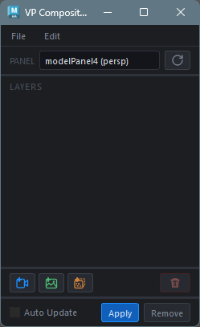
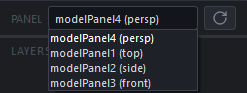
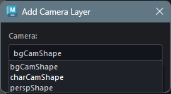
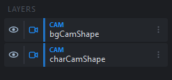
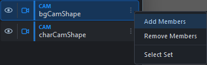
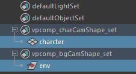
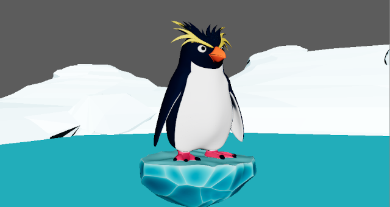
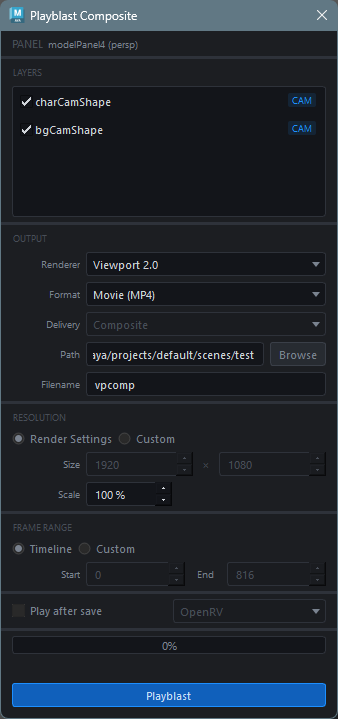

VP Compositor
Overview
VP Compositor is a tool for Photoshop-like layer compositing on Maya viewports. Using VP2 RenderOverride, it composites multiple camera renders, still images, and image sequences in real time.
The composited result can be exported as PNG sequences or MP4 videos, making it useful for layout checks and reference footage overlays during animation work.
This tool is currently in preview. Additional features such as opacity and blending will be added once core stability is confirmed.
Key Features
- Real-time layer compositing display (VP2 RenderOverride)
- Drag-and-drop layer reordering
- 4 fitting modes (viewport / film gate based)
- Playblast output (composite, per-layer, and movie)
- JSON export / import of layer configurations
How to Launch
Launch the tool from the dedicated menu or using the following command:
import faketools.tools.anim.vpcomp.ui
faketools.tools.anim.vpcomp.ui.show_ui()
UI Layout
The main window consists of the following elements:
| Area | Description |
|---|---|
| Panel Selector | Dropdown to select the target model panel for compositing |
| Layer List | List of compositing layers (topmost = frontmost, drag to reorder) |
| Add Buttons | Buttons to add Camera / Image / Sequence layers |
| Auto Update | When checked, the override updates automatically on layer changes |
Menu Bar
| Menu | Description |
|---|---|
| File > Export Layers | Save the current layer configuration to a JSON file |
| File > Import Layers | Load a layer configuration from a JSON file |
| Edit > Playblast | Open the Playblast window |
Basic Usage Example
1. Select the Target Viewport
Select the panel to use for compositing from the panel selector.

In this example, we select persp.
2. Add Layers (Camera / Image / Sequence)
Click the button for the layer type you want to add.
Click the button to add a camera layer.
Select a camera from the dialog that opens.

In this example, we add charCamShape (character camera) and bgCamShape (background model camera) in order.

3. Register Objects to Layers
When a Camera layer is added, an objectSet named
vpcomp_<camera_name>_set is
automatically created. To display only specific objects
for a camera in the VP2 override, add those objects to
this objectSet.
Select the objects, then add them from the icon on the right side of the camera layer.

Add the necessary objects to each layer.

4. Apply the VP2 Override
Click the Apply button to apply the VP2
override. The persp panel will now
display the composited result of
charCam and bgCam.
If the compositing order is incorrect as shown above,
you can drag and drop layers to rearrange them. >
When the Auto Update checkbox is enabled,
the view updates automatically whenever the layer
configuration changes.

5. Create a Playblast if Needed
If needed, open the Playblast Composite
window from Edit >
to playblast... to create a playblast.
Layers
Layer Types
The following layer types are available:
| Type | Badge | Description |
|---|---|---|
| Camera | CAM | Scene render layer using a camera + objectSet |
| Image | IMG | Static image overlay layer (PNG / JPG) |
| Sequence | SEQ | Image sequence layer (synced to timeline) |
Layer Operations
Visibility Toggle
Click the eye icon on the left side of the layer list to toggle layer visibility.
Reordering
Drag and drop layers to change the drawing order. Top of the list is frontmost, bottom is backmost.
Context Menu
Click the menu icon on the right side of the layer list to display a context menu specific to the layer type.
Camera Layer:
| Item | Description |
|---|---|
| Add Members | Add selected objects to the objectSet |
| Remove Members | Remove selected objects from the objectSet |
| Select Set | Select the objectSet members |
Image / Sequence Layer:
| Item | Description |
|---|---|
| Fit Mode | Change the fitting mode |
Fitting Modes
Specify how Image and Sequence layers are placed in the viewport.
| Mode | Description |
|---|---|
| Viewport Height | Fit to viewport height (width scaled by aspect ratio) |
| Viewport Width | Fit to viewport width (height scaled by aspect ratio) |
| Filmgate Height | Fit to the camera film gate height |
| Filmgate Width | Fit to the camera film gate width |
Note: Filmgate modes only work correctly when a CameraLayer exists. Without a CameraLayer, they fall back to Viewport modes.
Exporting / Importing Layer Configurations
File > Export Layers saves the
current layer configuration as a
.vpcomp.json file.
File > Import Layers loads a saved layer configuration. During import, cameras and files are validated against the current scene, and warnings are displayed for any missing references. ObjectSets for Camera layers are automatically created if they do not exist.
Playblast
Open the Playblast dialog from Edit > Playblast.

Settings
Layer Selection
Select which layers to include in the composite using checkboxes. The frontmost layer appears at the top of the list.
Renderer
Select the VP2 renderer to use. Choose from Viewport 2.0 and any registered VP2 overrides.
Output Format
| Format | Description |
|---|---|
| Image Sequence | Output as PNG sequence |
| Movie | Output as H.264 MP4 video (requires ffmpeg) |
Delivery Mode
Available when Image Sequence is selected.
| Mode | Description |
|---|---|
| Composite | Output a single merged sequence of all layers |
| Per-Layer | Output each layer as a separate sequence (in subfolders) |
| Both | Output both Composite and Per-Layer |
Note: When Movie output is selected, the delivery mode is automatically set to Composite.
Output Destination
| Item | Description |
|---|---|
| Path | Output directory |
| Filename | Filename prefix (default: vpcomp) |
Resolution
| Mode | Description |
|---|---|
| Render Settings | Use the Maya scene’s Render Settings (defaultResolution) |
| Custom | Manually specify width and height |
Use the Scale slider to set the scale ratio relative to the resolution (1–100%).
Frame Range
| Mode | Description |
|---|---|
| Timeline | Use the Maya timeline playback range |
| Custom | Manually specify start and end frames |
Play after save
When checked, the result is played back in the selected player after export.
| Player | Description |
|---|---|
| OpenRV | Send to OpenRV via rvpush (requires rvpush in PATH) |
| Sync Player | Play in FakeTools Sync Player |
| System Default | Open with the OS default application |
Note: The player dropdown is greyed out when the “Play after save” checkbox is unchecked.
Running Playblast
Click the Apply button to start the playblast. Progress is shown in a progress bar, and you can cancel during processing with the Cancel button.
Processing Pipeline
- Capture: Capture each Camera
layer’s frames using
cmds.playblast() - Composite: Merge layers frame by frame using Pillow
- Output: Save as PNG sequence, or encode to MP4 via ffmpeg
Settings Persistence
Playblast dialog settings are automatically saved and restored on the next launch.
Layer Limits
- Each layer type is limited to a maximum of 5.
- The same camera cannot be used in multiple Camera layers.
External Dependencies
| Dependency | Purpose | Required |
|---|---|---|
| Pillow | Layer compositing during Playblast | Only when using Playblast |
| ffmpeg | MP4 video encoding | Only for Movie output |
Note: If Pillow is not installed, the Playblast menu is disabled. If ffmpeg is not in PATH, the Movie format cannot be selected.
Notes
- VP2 RenderOverride is applied per panel. When changing the target panel, remove the current override first
- If a Camera layer’s objectSet is empty, nothing is rendered for that layer
- During playblast, the viewport state (camera, display settings, background, etc.) is temporarily modified and restored after completion
- Film gate fitting for Image / Sequence layers is only effective when a CameraLayer exists in the scene